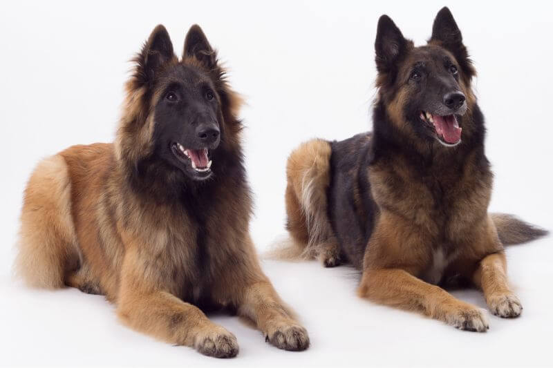
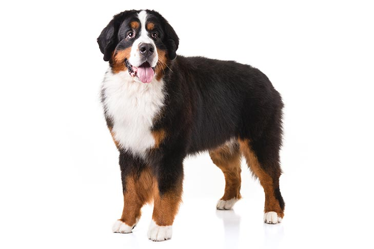
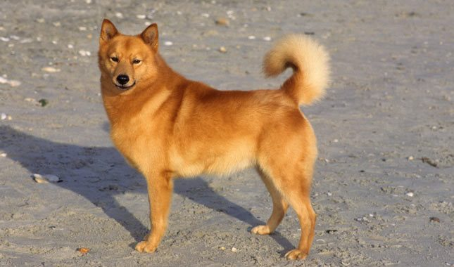
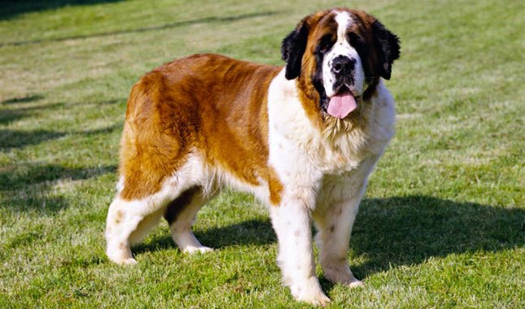

When people ask me what I do for fun, I quickly reply that I hang out with my dogs. They are my best friends, and they bring me so much joy! One day, my husband and I plan to build a house on 10 acres and have at least seven dogs. Below you will find a list of dogs that we either have, or plan to have, and what the dog is breed for.
Belgian Tervuren
This summer, I got my dream dog, a Belgian Tervuren. Leo, our terv, is a herding dog by trade, but in more recent years, they have become police dogs, therapy dogs, and service dogs. Among that, terv's compete in agility, obedience, tracking, and more! Terv's are highly active working dogs and not for the faint of heart. Leo is my pride and joy, however, his mouthyness could become an issue if he was not placed in the right home. I am fortunate that Leo does not destroy things in my home, however, he has taught his sisters how to open the trash can and get snacks. So, if you have any dog proof trash cans, I would love to know.
Bernese Mountain Dog
Unfortunately, we do not have a Bernese Mountain Dog yet. I'm trying to convince my husband that we need one soon, but frankly we don't have the space to call ourselves responsible dog owners. Bernese Mountain Dogs are working dogs that were bred to be watch dogs and loyal companions. They are sturdy dogs that weigh 70 to 115 pounds. Because of the dog's energy level for herding, and their size, buyer's beware. Handling Bernese Mountain Dog's is difficult if the dog is not trained properly.
Black Mouth Cur

Oh, Athena. sigh If you haven't guessed already, I have a Black Mouth Cur named Athena! Do not get me wrong, she is my precious baby, but the personality on that girl! She yells at me constantly, squeaks her toy until she get's pet, and sleeps on my chest at night. But I digress. Unlike the breeds I have previously listed, the Kennel Club does not recognize the Black Mouth Cur. Black Mouth Cur's are spirited working dogs bred for hunting and farming in the southeastern United States. It is obvious that she is not cut out for living in Colorado, but loves playing by the fireplace. Black Mouth Cur's weigh between 40 and 95 pounds and are lean and muscular. If not trained correctly, they can be difficult to handle.
Finnish Spitz
Kitty! My eldest baby is Katia, but she is more commonly referred to as Kitty or Kat. Technically Katia is a mutt, but she looks and acts mostly like a Finnish Spitz, so I claim her as one. Finnish Spitz are sporting dogs that weigh between 20 and 35 pounds. They were bred to hunt and are high energy. The last trait is by far my favorite. They TALK Katia is always grunting and groaning and mouthing off. If only I knew what she was saying...
Saint Bernard
Last but not least, is the Saint Bernard. My mother-in-law has two of them, and we have been fortunate enought to foster both of them, seperately, for a period of time. Saint Bernard's were originally bred to help find lost and injured travelers. As of recent years, they have become trusty companion dogs that love nearly everyone they meet. My personal precautions are, if they are not trained and they try to fight another dog, it is nearly impossible to handle the dog. Saint Bernards weigh between 120 to 180 pounds. It's like trying to fight another human! The other precaution I have is, if you do not like slobber, then do not get a Saint Bernard! I love clean floors, and it is hard for me to not be grossed out by them.
So, I'm not sure if you saw the trend, but I am clearly O B S S E S D with working dogs. They keep my life interesting and always on the move! I love all dogs and wish I could adopt all the dogs. In time all my dog dreams will come true.